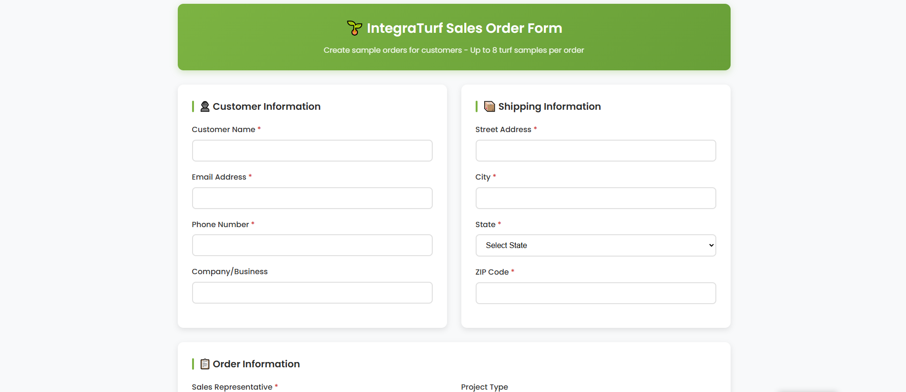
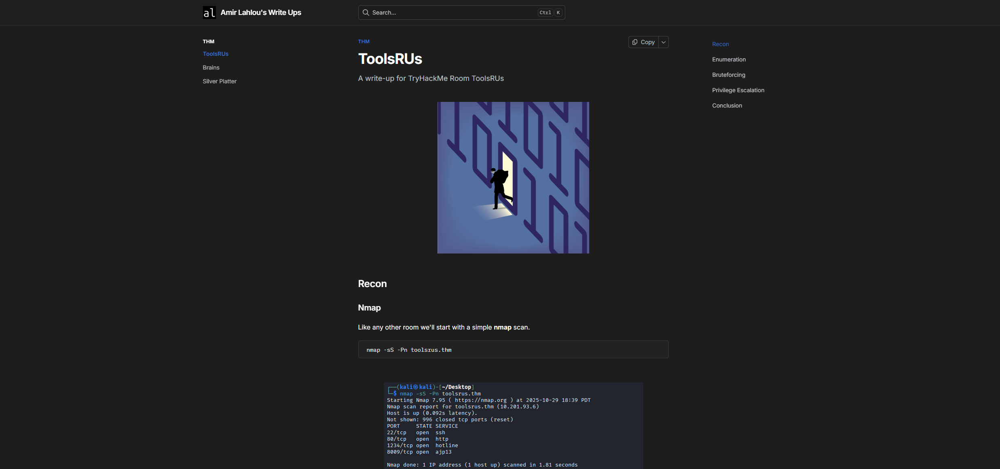

J46 Consulting
AI Automation System built on top of Node.js developed for a turf solutions company to automate sales intake, order processing, and customer follow-up. A frontend order form connects to a backend N8n agent that updates the company's CRM system and sends automated emails to customers greatly reducing manual work and data entry for the sales team.
HTML
Node.js
N8n
Proxmox Virtualization & Home Lab
Virtualized Home Lab built on Proxmox VE, used to host multiple Linux virtual machines for networking, automation, and cybersecurity practice. The enviroment includes a Wazuh based SIEM ingesting Windows and Linux logs, a Splunk instance for log analysis, and a Grafana dashboard for monitoring.
Linux
Proxmox
SIEM

Offensive Security Labs & Writeups
Hands-on offensive security labs focused on real-world attack paths, documented through structured writeups. Labs include reconnaissance, service enumeration, web exploitation, credential attacks, and Linux privilege escalation. Emphasis is placed on attacker methodology, tool usage, and understanding how misconfigurations lead to compromise.
Offensive Security Fundamentals
Web exploitation & enumeration
Linux privilege escalation
Linux Systems & Networking Practice
Practical Linux systems and networking work involving Arch, Kali, and Ubuntu environments. Includes OS installation, disk encryption, bootloader configuration, network troubleshooting, VPN connectivity issues, and command-line–driven system management. Focused on understanding system internals rather than GUI-based workflows.
Linux systems administration